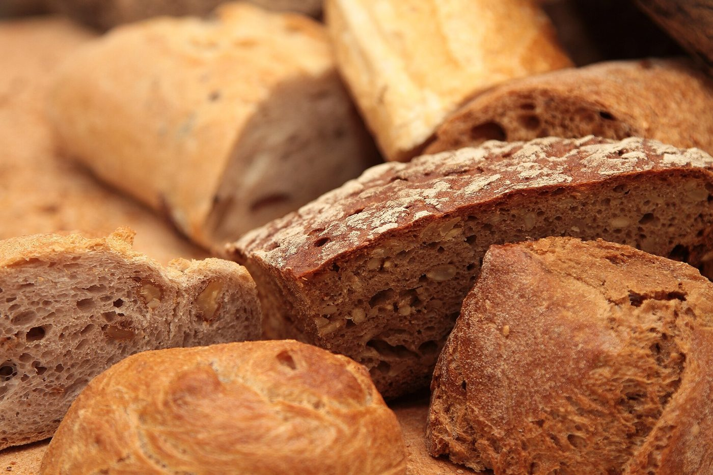

制作側の連想
ショットブラスト機の部位を、配置図にしてみる
このサイトは、金属の表面を整える機械を図にしたつもりで作りました。六つの部位に番号をふり、上の図と並べています。制作側の連想で、お店の理念・由来とは無関係です。実際の機械の仕様を示すものでもありません。
凡例
六つの部位
- 1投射機(インペラ)羽根車を高速で回し、粒を勢いよく飛ばす部分。
- 2投射材(ショット)小さな金属の粒。表面に当てて、汚れや古い塗装をはがす。
- 3研掃室(キャビネット)作業をおこなう、囲まれた箱状の部屋。
- 4回転テーブル品物をのせて回し、全体に粒が当たるようにする台。
- 5分離器(セパレーター)使った粒と粉じんを分け、使える粒だけを戻す部分。
- 6排気ダクト室内の粉じんを、集じん側へ送る通り道。
ギャラリー(イメージ)
パンの写真


写真はイメージです。お店のものではなく、お店で提供している商品を示すものでもありません。
ギャラリー(イメージ)
コーヒーのまわり



写真はイメージです。お店のものではなく、お店で提供している商品を示すものでもありません。
ご案内
お店のこと(確認できたものだけ)
| 所在地 | 〒708-0833 岡山県津山市西新町5 |
|---|---|
| 電話 | 準備中 |
| 営業時間 | 準備中 |
| 定休日 | 準備中 |
| ご予約 | 準備中 |
| 駐車場 | 準備中 |
| SNS | Instagram @orandado_tsuyama |